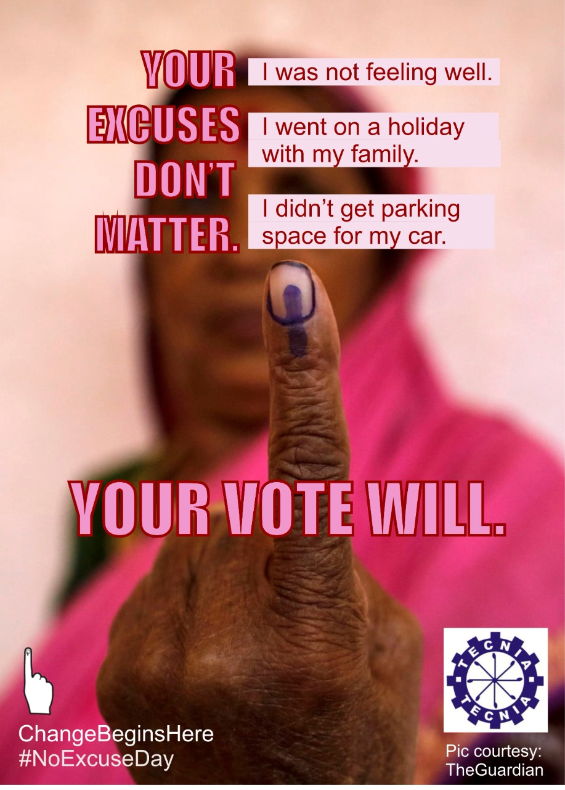

AD Campaign
Campaign on Importance of Voting
Objectives
To develop understanding in students of why Voting is important.
Introduction of voting system to students.
To build interest in general public so as for them to represent their selves by voting.
To create awareness about NOTA.
Providing pros of voting and cons of not voting.
To build and make youth understand our democratic system better.
Planning
Creative Strategy
Every Single Vote Is Significant: Needless to say, every citizen’s vote is counted in
the polling process. If the people are equally divided between two candidates, one
single vote can be a game-changer and a decisive factor. We have seen in the past
how one vote from an MP can decide the fall of the government. Exactly the same
way, a single person’s vote can confirm the win/fall of an aspiring MP or MLA.
Origin of the Change: Apart from the protests, voting is a highly effective medium to
have the change that we want in the government. Our nation has already witnessed
how a non-performing government gets dethroned by the spirit of wanting a change.
In recent years, there is a considerable rise in the voting percentage and people truly
love to be the ‘Change Makers’. Isn’t it exciting that a person can choose the leader
of the country right from the age of 18?
Non-choosers get NOTA: At times, it is possible that one does not want any single
candidate to be elected from all who are contesting. The election commission has
made a special provision of NOTA. It stands for none of The Above. Hence if none of
the candidates fit into your criteria, just hit the NOTA option and voice the opinion.
Introduction of this alternative is believed to play a significant role in the future. In
the late future, it may also be possible that the NOTA will decide the re-elections
with fresh candidates
A Sense of Pride: We must honor the right of voting given by the constitution of
India. The youngsters are well excited to exercise their right to vote as soon as they
turn 18. The feeling after having cast a vote infuses a sense of pride for being a
responsible citizen. As can be witnessed from the sharing of the inked finger on
social media. The trend is continuing to gain popularity amongst the Youngers and
the elders as well.
Media Strategy
Using Social Media
By providing website of TIAS where all the necessary information regarding the
importance of voting id given.
By creating Instagram and Facebook Page of TIAS and providing all the important
and valuable post regarding the voting which will help students to understand our
voting system better
Providing e-mail where students can mail their queries, if any.
By creating Google ads which look captivating and makes student understand the
importance of voting.
Organizing an online seminar with student and enlighten them on the topic of why
voting is important
Targeted Audience
Male and female from all around India who’ve turned 18 years old and above.
People from non-educated background with little to no knowledge of voting system
in India
Parents of students who’ve just turned 18 years old.
Implementation
Promoting brochure on our social media platforms and advertising sites- Facebook,
Instagram, Twitter website.
Providing videos on Tecnia TV and YouTube and every other social media handle of
events like Varchasva and SARAS and of different societies of college and creating
performance based on the same theme.
Running search engine Ads and Smart Ads on Google with CPC and keyword – (
“NOTA”, “Voting Importance”, “Youth Responsibility”, “Go and vote”, “India and
Voting”).
Campaign Will run from 1st May’2021 till 15th May’2021 for general public in India
and providing and updating information on social media all around the year.
TV Program
TV Advertisement
Print Advertisement
